Copyright © 2020, The Great India
All Rights Reserved
Developed & Maintaince by Santu De
India, officially the Republic of India, is a country in South Asia. It is the seventh-largest country by area, the second-most populous country, and the most populous democracy in the world. Bounded by the Indian Ocean on the south, the Arabian Sea on the southwest, and the Bay of Bengal on the southeast, it shares land borders with Pakistan to the west; China, Nepal, and Bhutan to the north; and Bangladesh and Myanmar to the east. In the Indian Ocean, India is in the vicinity of Sri Lanka and the Maldives; its Andaman and Nicobar Islands share a maritime border with Thailand and Indonesia.
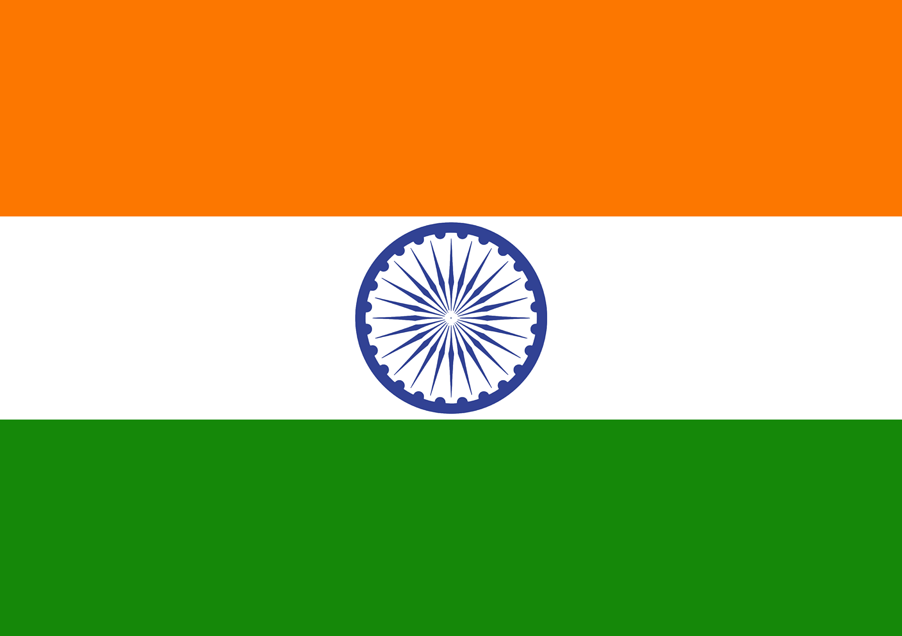 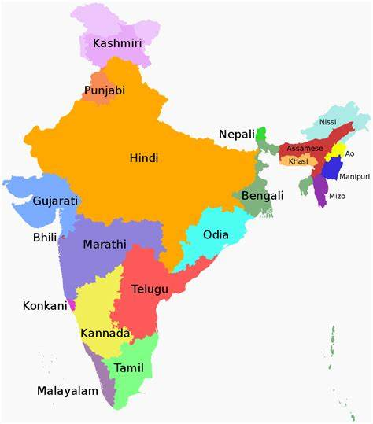| India Flag | India Map |
|---|
The partition of India in 1947 was the division of British India into two independent dominion states, the Union of India and the Dominion of Pakistan. The Union of India is today the Republic of India; the Dominion of Pakistan is today the Islamic Republic of Pakistan and the People's Republic of Bangladesh. The partition involved the division of two provinces, Bengal and the Punjab, based on district-wise non-Muslim or Muslim majorities. Also divided between the two new dominions were the British Indian Army, the Royal Indian Navy, the Indian Civil Service, the railways, and the central treasury. The partition was outlined in the Indian Independence Act 1947 and resulted in the dissolution of the British Raj, or Crown rule in India. The two self-governing countries of India and Pakistan legally came into existence at midnight on 14–15 August 1947.
| India Before | India After |
|---|
The freedom fighters of India played an extensive role in getting independence for the country. The 'Revolt of 1857' was the first war of independence of India. The revolt started as a mutiny by the sepoys of the East India Company. The Muslim and the Hindu sepoys together began this revolt. Rani Lakshmibai, Mangal Pandey, Bahadur Shah Zafar, Nana Sahib and Tatya Tope were some of the active leaders and freedom fighters who fought in the revolt. Mangal Pandey is considered as the hero in the modern India because he had played a pivotal role in beginning the revolt against the British. Rani Lakshmibai is considered as the symbol of resistance to the British rule and was one of the leading figures of the rebels in 1857.
In 1876, another movement started against the British rule. It was the foundation of the Indian National Congress (INC). Surendranath Banerjee laid the foundation of the party. Bal Gangadhar Tilak, Dadabhai Naoroji, Chittaranjan Das and Jawaharlal Nehru were active leaders of the INC. It was Mohandas Karamchand Gandhi who gave a push to the party and raised the struggle for freedom in a non-violent way. His Non-Cooperation Movement was a great success and a stepping stone for Indian freedom struggle.
| Subhas Chandra Bose | Bhagat Singh | Mahatma Gandhi | Khudiram Bose |
|---|
The politics of India works within the framework of the country's constitution. India is a federal parliamentary democratic republic in which the President of India is the head of state and the Prime Minister of India is the head of government. India follows the dual polity system, i.e. a double government that consists of the central authority at the centre and states at the periphery. The constitution defines the organisational powers and limitations of both central and state governments, and it is well recognised, rigid and considered supreme; i.e. the laws of the nation must confirm to it.
 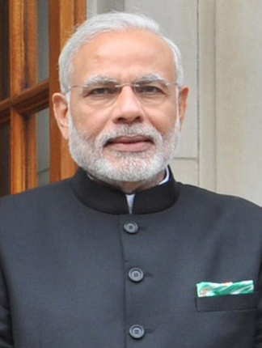
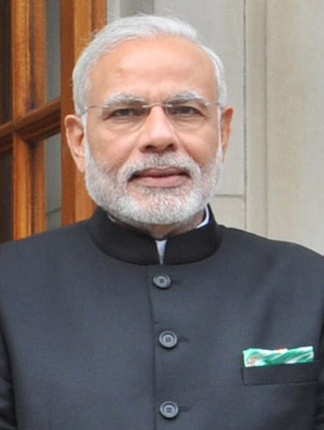


| A. P. J. Abdul Kalam | Narendra Modi | Mamata Banerjee | Amit Shah |
|---|
Business Standard is one of the largest Indian English-language daily edition newspaper published by Business Standard Ltd in two languages, English and Hindi. Founded in 1975, the newspaper does extensive coverage on the Indian economy, infrastructure, international business and trade, stock and currency markets, corporate governance, apart from a range of other financial news, opinions and insights.
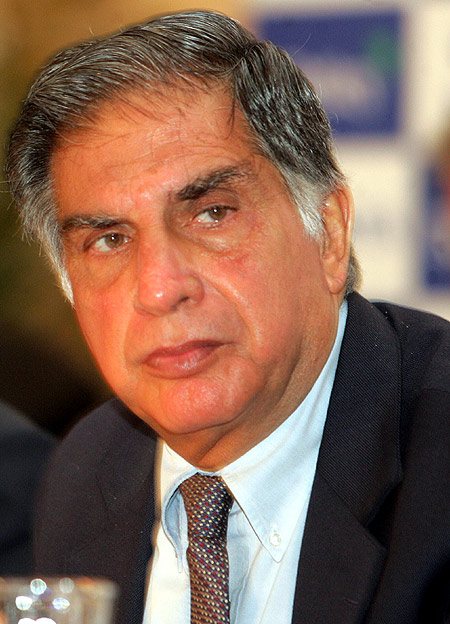 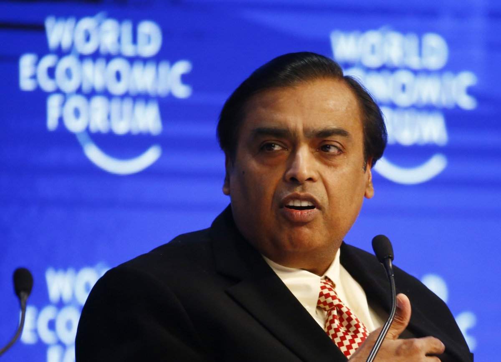 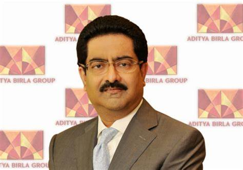
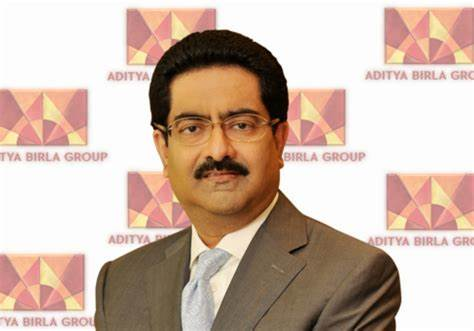
| Ratan Tata | Mukesh Ambani | Lakshmi Mittal | Aditya Birla |
|---|
Sport in India refers to the large variety of games played in India, ranging from tribal games to more mainstream sports such as cricket, badminton and football. India's diversity of culture, people and tribe as well as its colonial legacy is reflected in the wide variety of sporting disciplines in the country.
 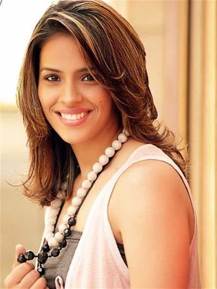
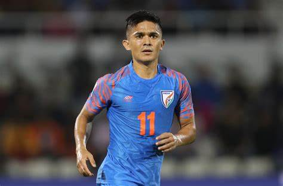
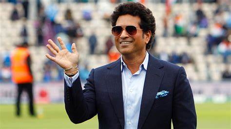
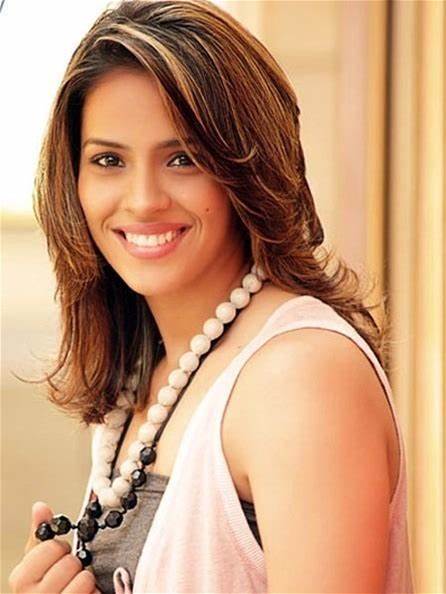
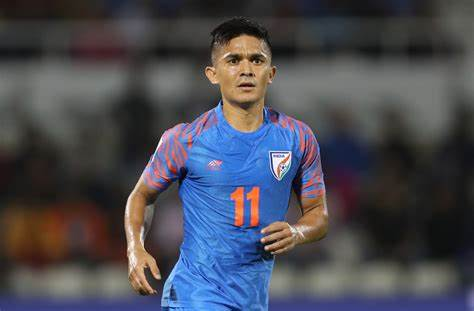
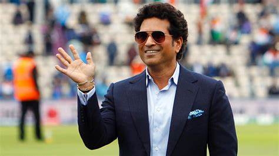
| Mahendra Singh Dhoni | Saina Nehwal | Sunil Chhetri | Sachin Tendulkar |
|---|